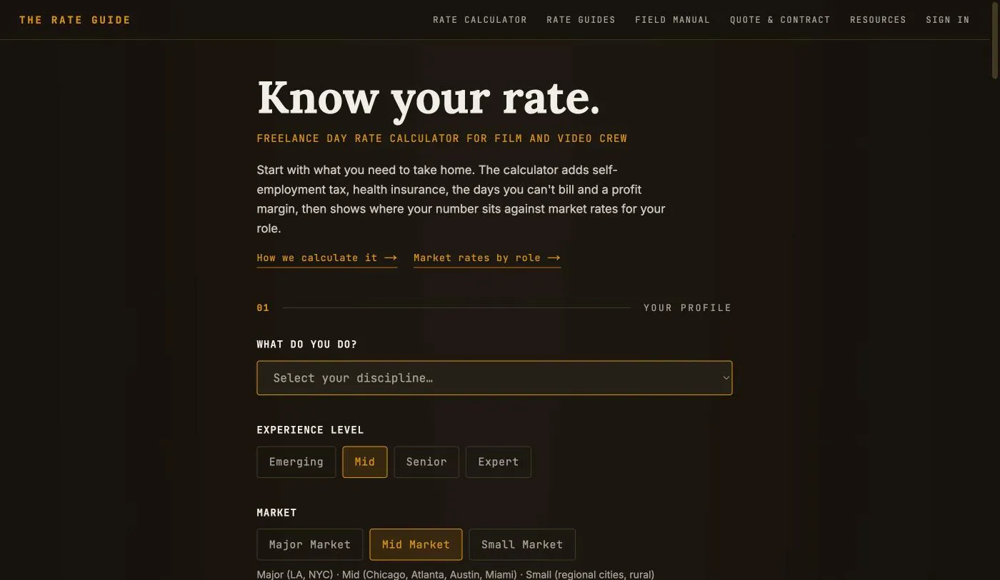

The Rate Guide
A full-stack platform for freelance film and video crew: a day-rate calculator that works backwards from take-home pay, fifteen market-rate guides, a quote builder, and a contract builder with versioned clauses and document output. Designed, built, tested, deployed, and operated solo.